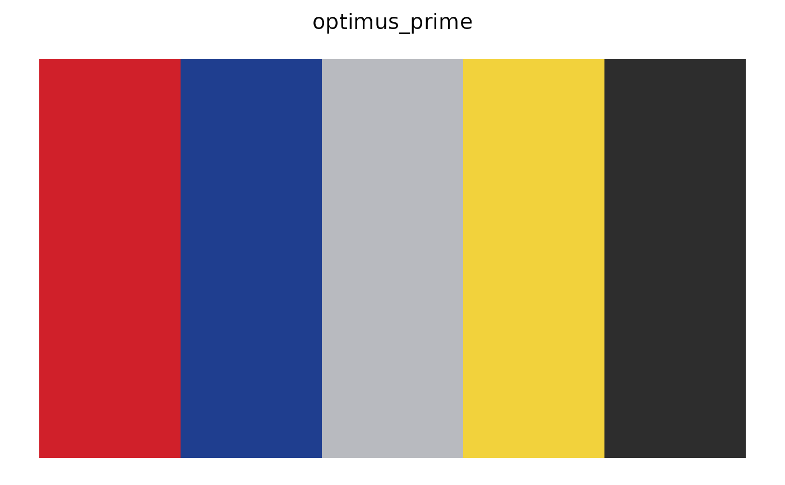
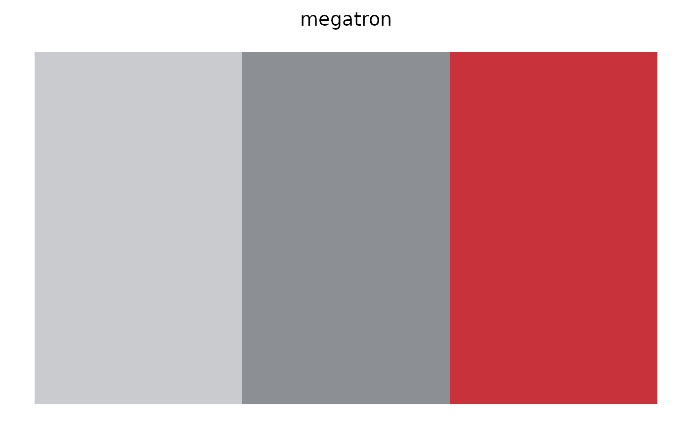
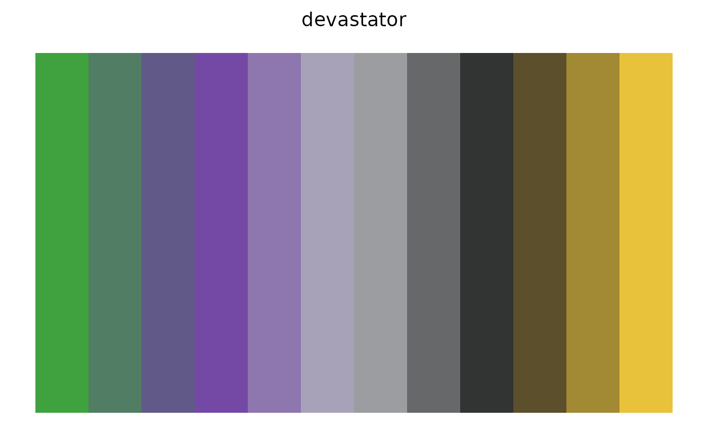
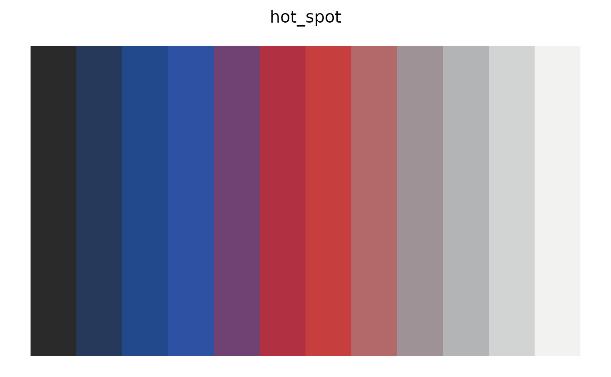
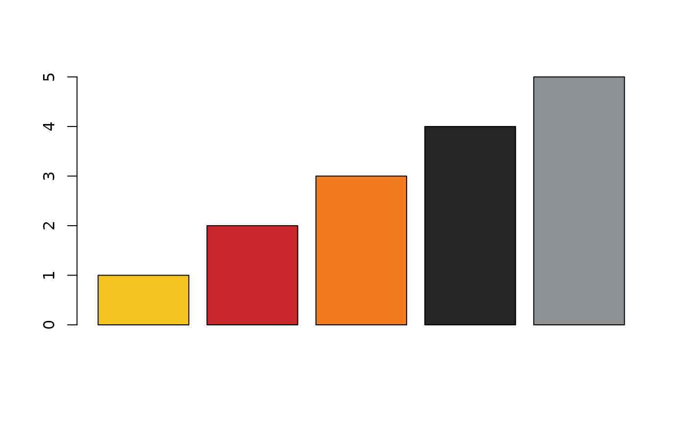

Returns n colours from the named character's palette, either the first
n curated colours (type = "discrete") or n colours interpolated
across the whole palette (type = "continuous").
Usage
tf_palette(
name,
n = NULL,
type = c("discrete", "continuous"),
strict = TRUE,
sort = FALSE
)Arguments
- name
Palette name. Case-insensitive, and spaces or hyphens may stand in for underscores, so
"Optimus Prime"and"Hun-Gurrr"work. Seetf_palette_names().- n
Number of colours wanted. Defaults to every colour in the palette.
- type
Either
"discrete"(default) to return the curated colours as they are, or"continuous"to interpolatencolours across the palette withgrDevices::colorRampPalette().- strict
Logical. For discrete palettes, error when
nexceeds the number of curated colours (default). IfFALSE, interpolate toncolours instead.- sort
Logical. If
TRUE, order the colours from darkest to lightest (by CIE lightness) before selecting or interpolating. Useful when a palette is used as a sequential gradient; seetf_find_palettes().
Value
A character vector of hex colours with class "tf_palette", which
has a print method that draws the swatches.
Examples
tf_palette("optimus_prime")
#> Transformers palette 'optimus_prime' (5 colours)
#> Autobot: Optimus Prime
#> #D0202A #1F3E8F #B8BABF #F2D23C #2D2D2D

tf_palette("Megatron", 3)
#> Transformers palette 'megatron' (3 colours)
#> Decepticon: Megatron
#> #C9CBCF #8C9095 #C8323A

tf_palette("devastator", 12, type = "continuous")
#> Transformers palette 'devastator' (12 colours)
#> Decepticon / Constructicons: Devastator
#> #3FA23F #507D63 #615987 #7449A5 #8E76AE #A8A2B8 #9B9DA1 #67686A #323333 #5B502B #A28933 #E9C23B

tf_palette("hot_spot", 12, type = "continuous", sort = TRUE)
#> Transformers palette 'hot_spot' (12 colours)
#> Autobot / Protectobots: Hot Spot
#> #2A2A2A #26395A #22498B #2F51A3 #704173 #B13142 #C73E3F #B3686A #9F9296 #B2B4B6 #D2D3D3 #F2F2F0

# base graphics
barplot(1:5, col = tf_palette("predaking"))
